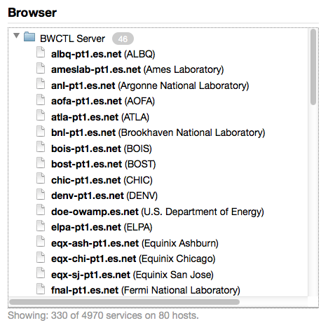
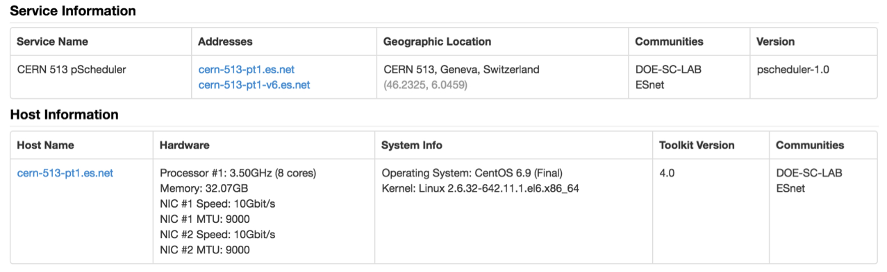
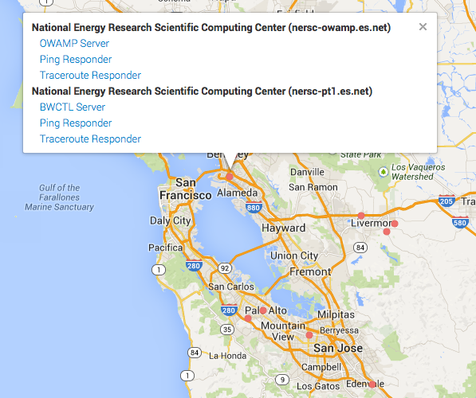

Locating Remote perfSONAR testpoints¶
The perfSONAR project maintains a graphical interface to the services directory of all perfSONAR nodes. It can be found at this link:
Interacting with this service can be done by scanning the map to find an instance where you may know a location, or by trying to search on specific terms.
As an example, a search for “es.net” will return hosts that have that domain:
Clicking on a host will bring up specific information about the software and hardware:
Searching the map after narrowing the results will place specific red beacons for each host. Zooming into a region that has a larger red beacon will show where individual nodes are located:
Note that map functionality relies on accurate latitude and longitude information, that is entered when the machine is configured. Machines that have inaccurate information will not be placed correctly.
perfSONAR Lookup Service¶
You can also query perfSONAR’s Simple Lookup Service (sLS) directly.
There is a Python client available for the sLS that offers basic query functionality. The sLS client comes with two wrapper functions:
find_ps_ma - a command line script that returns a list of MAs that have test results for given host.
sls_dig - a script that is similar to “dig” tool. It retrieves information about a host registered in the sLS.
These can be installed via easy_install:
easy_install sls-client
Or via: https://pypi.python.org/simple/sls-client/
For example, you can run:
sls_dig hostname
find_ps_ma -n hostname
Asking Sites to Deploy perfSONAR¶
If you are debugging an end-to-end problem crossing several domains, it is helpful to locate perfSONAR instances along this path. More instances help to divide and conquer a problem more effectively.
In the event that you are not able to locate a perfSONAR node in a domain, the following strategies can be used when dealing with the domain administrators:
As the domain, via their NOC or helpdesk system, if they have a perfSONAR node available for testing. It may be the case that it is not publicly advertised.
Be prepared to send them your subnet information in the event the machine is protected by a firewall, and requires ACLs for access.
If they do not have a node, ask them to review https://www.perfsonar.net/about/how-does-it-work/, which explains possible deployment strategies. In particular the beacon method, perhaps as a perfsonar-tools deployment, would work for a temporary debugging host.
Engage the national Research and Education network (ESnet, GEANT eduPERT, Internet2) to act as a mediator for the request, and to track the outcome.
Testing Etiquette¶
Each deployed perfSONAR testing resource is owned, operated, and maintained by the deploying site; the perfSONAR project does not maintain any central control over these testing resources. Given this fact, it is pollite to always remember that measurement testing consumes network resources, and some facilities may appreciate testing traffic more than others. The perfSONAR project recommends a couple of guidelines when setting up tests to consider the nature of testing for networks of all sizes.
All perfSONAR resources come with default policy that allows open testing:
The host-based firewall is configured to allow the correct ports to be opened
The measurement tools have stub usage policy that allows testing of certain protocols and sizes
The ability to register the service in the global directory
Sites may choose to impart other restrictions:
Limiting perfSONAR’s ability to register in the Lookup Service
Restricting access to the testing resource via network ACLs
Restricting access to the testing resource via host/system ACLs
Restricting (or granting) permissions on the type and duration of testing
In general, a perfSONAR resource will allow open testing unless someone has explicitily prevented this from occuring. Consider several high level things when testing:
Is the site a major network crossroads, or an edge. Large networks, such as ESnet, GEANT, and Internet2, and countless RONs and NRENs make perfSONAR resources available for testing. These networks are large and well connected, and make the resource available as a service to all. A smaller college, university, or experiemental facility is nowhere near the same scale and may have deployed perfSONAR to debug their own problems. Consider carefully before testing to something that may be resource constrained
Is the site connected at a large, or small, capcity. If a site has deployed a 1G perfSONAR node, they may not have a lot of bandwidth to spare. Equally, if a site has deployed a 100G perfSONAR node, the resource may overwhelm other traffic.
How recent is the perfSONAR deployment. If you find a testing resource that is several versions old, it may not be well maintained and not very useful for network testing.
Does the metadata associated with the service indicate a special circumstance of deployment. For example, if the host is connected via WiFi, is a smaller piece of hardware, or a Virtual Machine, it may not be the best thing to test against.
Suggested Interactions for Testing¶
Depending on the testing interaction that is desired, there are several interaction strategies:
One-Off or Short Burst Testing: If a single test, or short bursts of testing to aid in debugging, are desired it is unlikely that a site would mind their resource being used. Sites that have not explicitly stopped external testing, are giving an implicit permission to use resources for testing. Contacting a site to test may be polite, but should not be an obbligation.
Regular Testing, Long Interval: Similar to the situation of a single test, a small number of regular tests (e.g. 1 to 2 per day) should not cause a hardship for a site that has deployed perfSONAR. Contacting a site to test may be polite, but should not be an obbligation.
Regular Testing, Short Interval: Testing (e.g. several times per day) may begin to consume system resources in a noticable way, particularly when large amounts of bandwidth are consumed. If regular testing multiple times per day is desired, it is suggested that permission be sought, particularlly for a resource that may not be at a major internet crossroads (e.g. a campus, or facility).
Coordinated Testing: Coordinated testing implicitly requires participation by sites (e.g. creating a shared configuration file), so there is a step that will require participating sites to install configuration and understand the number of tests that will be performed. Discuss acceptable limits in testing, and respect those that wish to keep the intervals low.